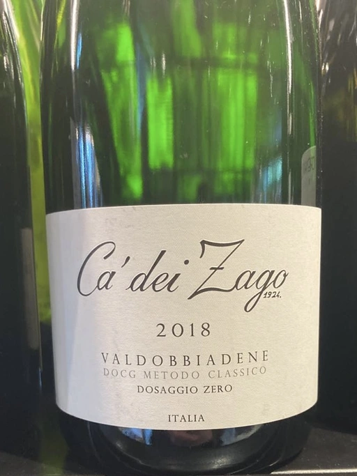

- Type
- White Sparkling, Brut nature
- Producer
- Ca Dei Zago
- Vintage
- 2018
- Location
- Italy, Conegliano Valdobbiadene Prosecco DOCG
- Grapes
- Glera
- Alcohol
- 11
- Sugar
- NA
- Price
- 1050 UAH
- Cellar
- N/A
Ratings
2022-07-15 - 7.40
A prosecco made in the traditional method without dosage. Sounds interesting! Result? Not so interesting. Flabby and shy. Flowers meet bread. Sour baked apple. Neat salty finish. That’s it.
Related